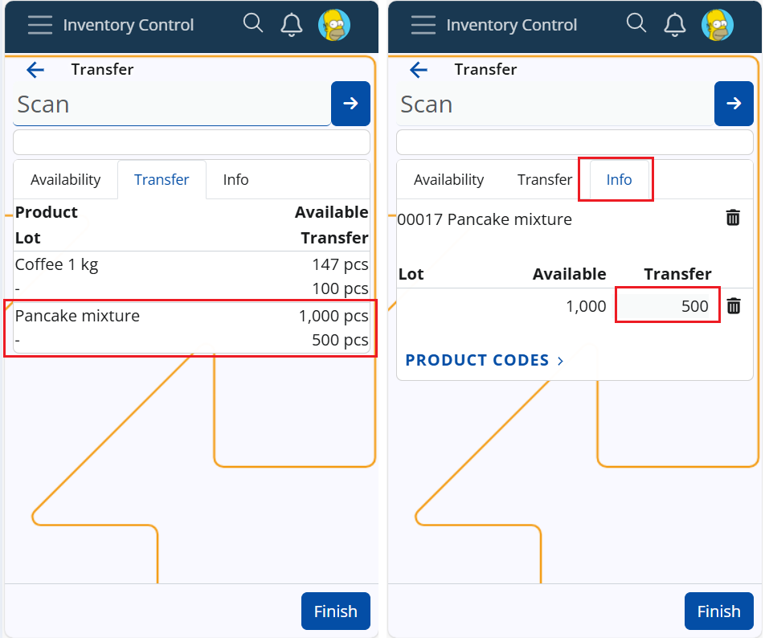
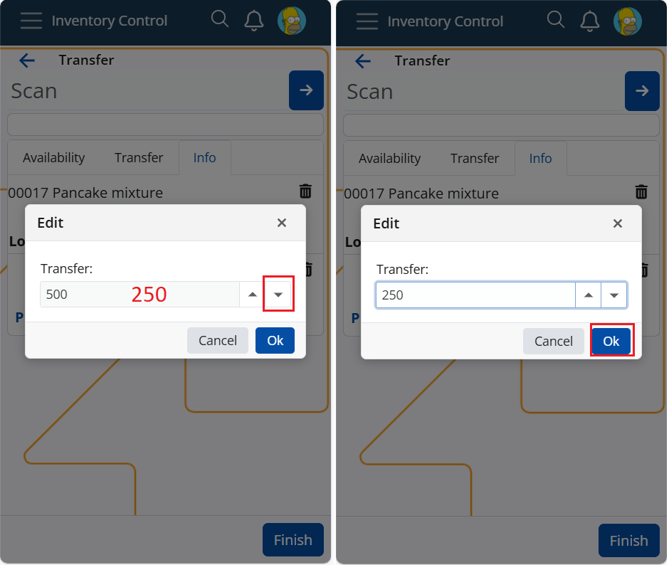
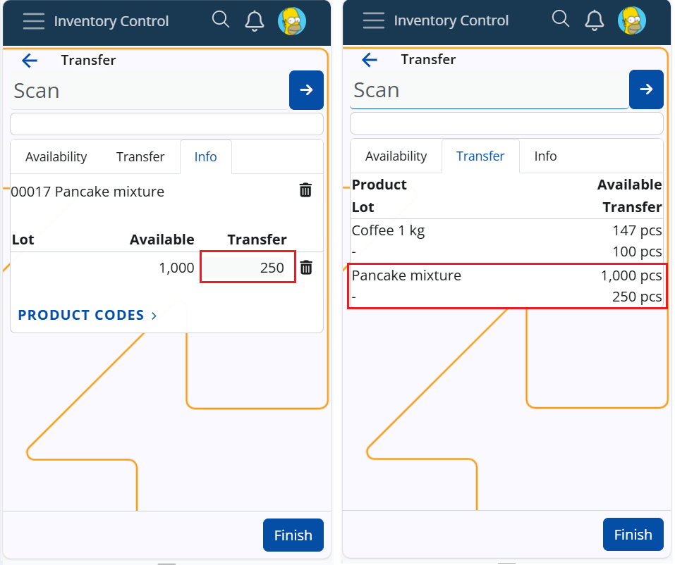
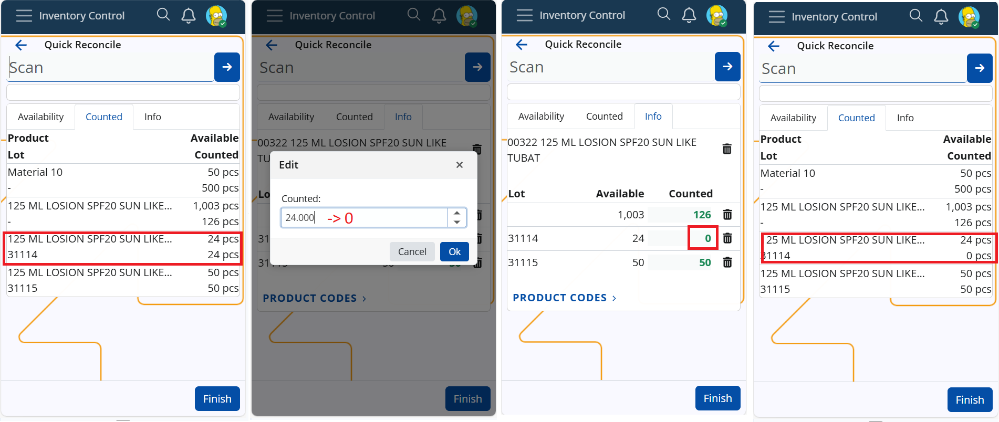
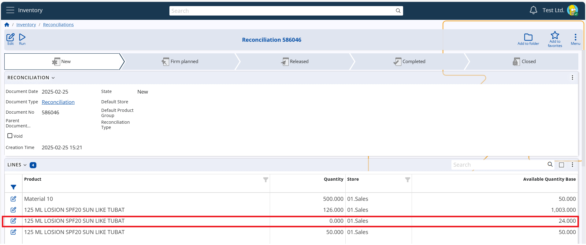

How to edit quantity
For the sake of accuracy, efficiency, and flexibility in inventory operations, workers can edit the executed quantity at operations Receive, Issue, Scrap, Transfer, and Quick Reconcile. Whether due to scanning errors, miscounts, or handling variations in products with lots and variants it is necessary to do on-the-go corrections directly during execution, eliminating the need for later adjustments in the Store transaction. Here is a detailed instruction on how to perform the corrections.
Key details
- the editable field is accesible in tab Info only
- it is light-grey
- the edit is performed in a pop-up box
- the box is supplied with up/down keys plus you can input digits from the keyboard as well
- the edit needs confirmation
- multiple edits are possible
Perform a quantity edit
When any quantity is scanned it enters the designated field - executed, transfer, scrap, counted. Only the quantity field in tab Info is editable.
Let say you transfer 500pcs of product X. You realize you need to correct the quantity to 250pcs.

Steps:
- Navigate to tab Info of product X
- Click in the light-grey quantity field that contains "500" -> a pop-up edit-box will appear
- Enter the correct quantity "250" from the keyboard or use the down arrow
- Confirm with "Ok"

Result:
- The new quantity is saved in the field
- The field in tab Transfer is edited too
- The quantity can be edited until a Transfer Order is created with button Finish

Note
Corrections to zero (0) are possible.
Warning
- Corrections to "0" at Quick Reconcile mean "counted 0 pcs", not "never counted".

- Zero quantity lines in the finishing document will be created.

Warning
- Corrections to "0" at the other operations do not create zero quantity lines.